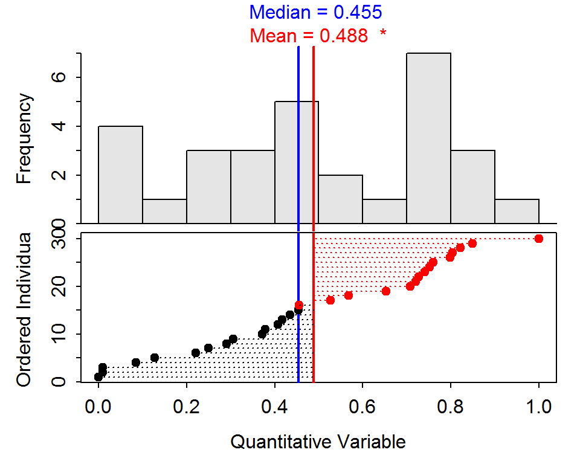

Using the meanMedian() function with no arguments will open a plot constructed from random data that looks like that below.

The top plot is a histogram. The lower plot shows individuals above the median (blue vertical line) with red dots and individuals below the median with black dots. In addition, the dashed horizontal lines represent the differences of each individual from the mean (red vertical line) with negative values in black and positive values in red.
In RStudio, this plot will also have a small “gear” icon in the upper-left corner. Clicking the gear opens a dialog box where you can control the sample size, two shape parameters, and whether an outlier is modeled or not. In the questions below, leave the sample size at 30 and press the “rerandomize” button several times.
shape1=5, shape2=1, and there are no outliers.shape1=1, shape2=5, and there are no outliers.shape1=3, shape2=3, and there is an outlier at the minimum value.shape1=3, shape2=3, and there is an outlier at the maximum value.